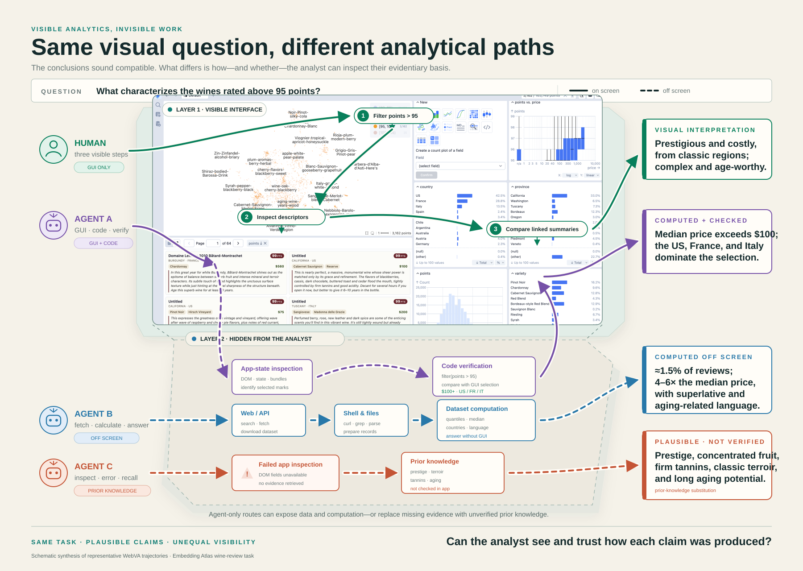
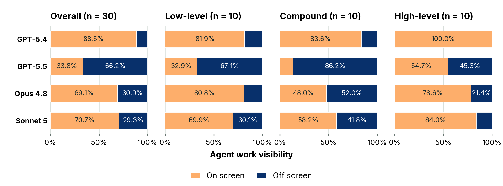
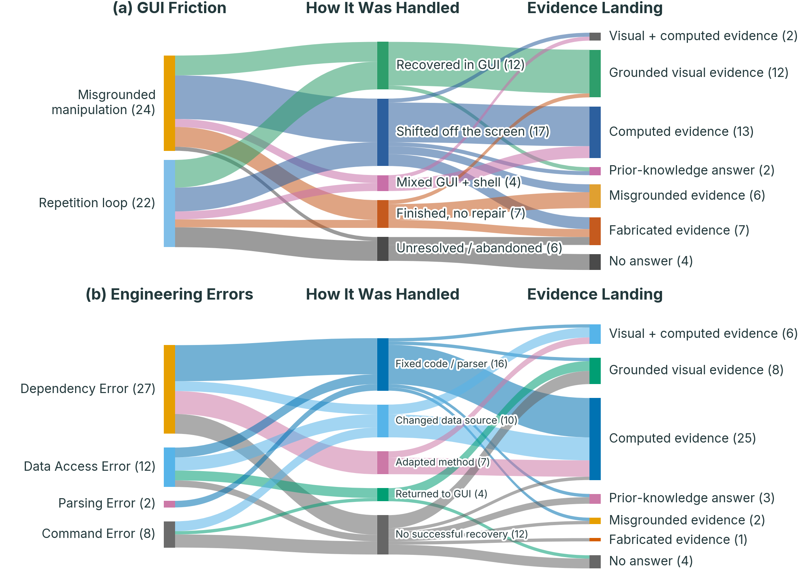
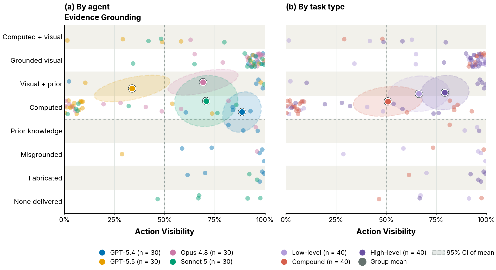
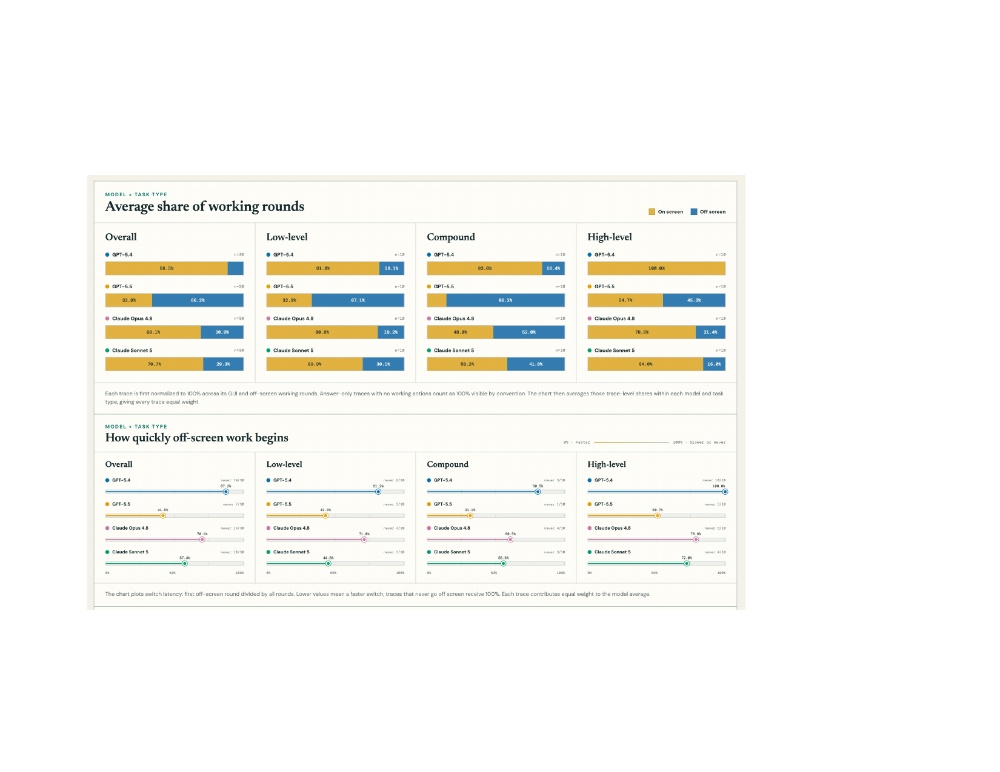

Correct answers can conceal analyses that never meaningfully engage with the visualization. We compare complete agent and human trajectories to ask not only whether an answer succeeds, but how it was produced and what evidence remains inspectable.
Agents often move away from the rendered interface to inspect app internals, fetch data, compute in code, or rely on recalled knowledge. These routes can be effective, but they also make the analytical process harder to inspect and can leave claims weakly connected to the view. Human analysts stayed comparatively interface-centered and treated visual evidence as something to explore and revise.
The central problem
One visual question. Four plausible paths.
A human works through the visible interface. Agents mix GUI actions with code, bypass the interface entirely, or substitute prior knowledge after retrieval fails. The conclusions sound plausible; the evidence differs sharply in visibility and faithfulness.

Teaser Same interface and task, but unequal analytical paths and evidence.
Study design
We compare the full process—not only the final answer.
Agents and people completed the same 30 tasks in the same controlled desktop. TraLens records screenshots, actions, reasoning, tool outputs, and submitted answers as replayable trajectories.
Study A matched trajectory corpus across visual-analytics and general-web tasks.
Findings
Similar outcomes, divergent analytical trajectories.
We organize the evidence around the paper’s three research questions: how agents conduct VA, what changes beyond VA, and how agent practices differ from human analysis.
01
RQ1 · Analytical routes
High task scores masked different ways of working.
GPT‑5.5 and Opus 4.8 both scored 95%, yet GPT‑5.5 conducted most work off screen while Opus stayed mostly in the interface. GPT‑5.4 was the most visible; Sonnet 5 was the most expensive and persistent. A shared success rate did not imply a shared analytical process.
GPT‑5.472.7%66.2k tokens · 12.7 rounds
GPT‑5.595.0%159.7k tokens · 16.7 rounds
Opus 4.895.0%163.8k tokens · 17.9 rounds
Sonnet 581.7%307.5k tokens · 33.8 rounds

Where Mean share of working rounds on versus off screen.
Agents often displaced friction instead of resolving it.
GUI failures led to recovery in the interface, shifts to code, mixed strategies, or unresolved endings. Moving off screen introduced a second failure surface: dependencies, data access, parsing, and command errors. An agent could recover the answer while leaving the failed interface state untouched.
46
GUI-friction episodes
49
error-bearing traces
28%
GUI episodes unrepaired

Breakdown → response → evidence GUI friction and engineering errors create different recovery paths and evidentiary consequences.
Visible work was neither necessary nor sufficient for trustworthy evidence.
Some claims were visibly grounded in the interface; others were grounded in computation but largely invisible to a collaborator. The risky cases combined visible activity with misgrounded or fabricated evidence. Auditability depends on both what a collaborator can see and what actually supports the claim.

Visibility × grounding Each dot is one trajectory; group means reveal distinct auditability profiles.
Visible + groundedEvidence-backed and readily inspectable.
Hidden + groundedQuantitative, but costly for a collaborator to audit.
Visible + ungroundedActivity looks inspectable, but does not support the claim.
Hidden + ungroundedNeither process nor evidence is reliable.
Tool switching is common on the web—but in VA it can replace the analysis itself.
In 120 matched GAIA trajectories, search and shell dominated while direct GUI manipulation represented only 1.8% of calls. For general-web tasks, an off-screen route often changes how information is retrieved. In visual analytics, it can change how evidence is produced, interpreted, and shared.
Humans and agents treated the interface as different epistemic resources.
People stayed in the interface, learned its affordances through exploration, and used prior expectations as revisable hypotheses. Agents were more likely to convert uncertainty into computation, a named target, or recalled data. Their answers could be precise while becoming disconnected from the shared visual workspace.
94.0%
human mean score
67/120
agent traces with off-screen work
37/120
with prior-knowledge injection

Same tasks, different practices People primarily construct and inspect evidence in the shared interface; agents more readily branch into computation and recalled knowledge.